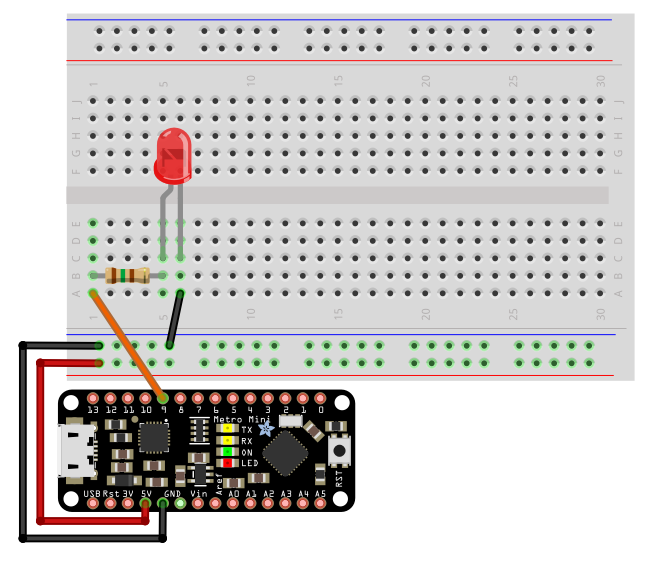

Chrono
Chronometer/stopwatch library that counts the time passed since started.
Get It!
Adding Chrono
Copy the Chrono folder to your Arduino or Wiring libraries folder or download it with the Arduino library manager.
Basic Example
// INCLUDE CHRONO LIBRARY
// Documentation : https://github.com/SofaPirate/Chrono-Arduino-Wiring/blob/master/README.md
// Download : https://github.com/SofaPirate/Chrono-Arduino-Wiring/archive/master.zip
#include <Chrono.h>
// Instanciate a Chrono object.
Chrono myChrono;
void setup() {
}
void loop() {
// Check whether the chronometer has reached 1000 time units.
if (myChrono.hasPassed(1000)) {
myChrono.restart(); // Restart the chronometer.
// Do something here...
}
}
Basic Usage
Include the library
// INCLUDE CHRONO LIBRARY : http://github.com/SofaPirate/Chrono
#include <Chrono.h>
Create an instance
Once a Chrono is created, it starts counting (in milliseconds by default).
// CREATE A CHRONO INSTANCE :
Chrono myChrono;
Basic Methods
| elapsed() | unsigned long | Returns the elapsed time |
| restart() | void | Starts/restarts the chronometer |
| hasPassed( timeout ) | bool | Returns true if the chronometer passed the timeout |
Example: Blinking the debug LED
/*
This code will toggle pin 13 on and off every second (1000 ms).
This should be the debug LED's pin. So the debug LED should
blink every second.
*/
// INCLUDE CHRONO LIBRARY : http://github.com/SofaPirate/Chrono
#include
// Set the led's pin
int ledPin = 13;
//Create a variable to hold the led's state
int ledState = HIGH;
// Instanciate a Chrono object.
Chrono ledChrono;
void setup()
{
pinMode(ledPin,OUTPUT);
digitalWrite(ledPin,ledState);
}
void loop()
{
if (ledChrono.hasPassed(1000) ) { // returns true if it passed 1000 ms since it was started
ledChrono.restart(); // restart the crono so that it triggers again later
// toggle the stored state
if (ledState==HIGH) ledState=LOW;
else ledState=HIGH;
// write the state to the pin
digitalWrite(ledPin,ledState);
}
}
Example: Blinking 2 LEDS

// This code will toggle output 13 every 250 ms
// and will toggle output 9 every 125 ms
// INCLUDE CHRONO LIBRARY : http://github.com/SofaPirate/Chrono
#include
// Create variables for the LED pins
int ledPinA = 13;
int ledPinB = 9;
// Create variables to hold the LED states
int ledStateA = HIGH;
int ledStateB = HIGH;
// Instantiate two Chronos
Chrono chronoA;
Chrono chronoB;
void setup()
{
pinMode(ledPinA,OUTPUT);
digitalWrite(ledPinA,ledStateA);
pinMode(ledPinB,OUTPUT);
digitalWrite(ledPinB,ledStateB);
}
void loop()
{
// Use Chrono as a metronome with an interval of 250 ms:
if ( chronoA.hasPassed(250) ) { // returns true if it passed 250 ms since it was started
chronoA.restart(); // restart the crono so that it triggers again later
ledStateA = !ledStateA; // !: toggle the state from 0 to 1 or from 1 to 0
digitalWrite(ledPinA,ledStateA);
}
// Use Chrono as a metronome with an interval of 125 ms:
if ( chronoB.hasPassed(125) ) { // returns true if it passed 125 ms since it was started
chronoB.restart(); // restart the crono so that it triggers again later
ledStateB = !ledStateB; // !: toggle the state from 0 to 1 or from 1 to 0
digitalWrite(ledPinB,ledStateB);
}
}
Advanced Usage
Time units
You can create a Chrono that counts in microseconds or seconds:Chrono myChronoMicros(Chrono::MICROS);
Chrono myChronoSeconds(Chrono::SECONDS);
Custom time function
Alternatively you can create a Chrono with a custom time function:unsigned long mySpecialTimeFunction();
Chrono myChronoMicros(mySpecialTimeFunction);
Advanced Methods
| restart( offset ) | void | You can alternatively start(restart) the chronometer with a time offset |
| stop() | void | Stops/pauses the chronometer |
| resume( ) | void | Resumes the chronometer |
| hasPassed( timeout,restartIfPassed ) | bool | If the chronometer passed the timeout, returns true and restarts the chronometer |
| add( time ) | void | Immediately adds some time to the chronometer |
| isRunning( ) | bool | Returns true if the chronometer is currently running |
| delay( time ) | void | Waits for some time (in the time unit of the chronometer) |